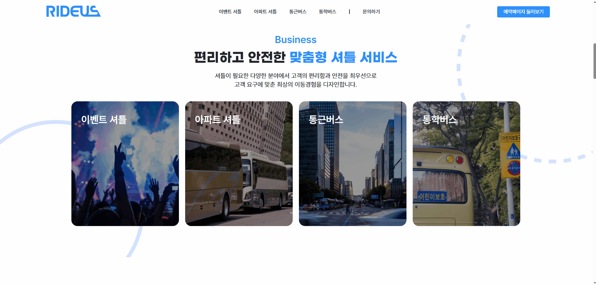
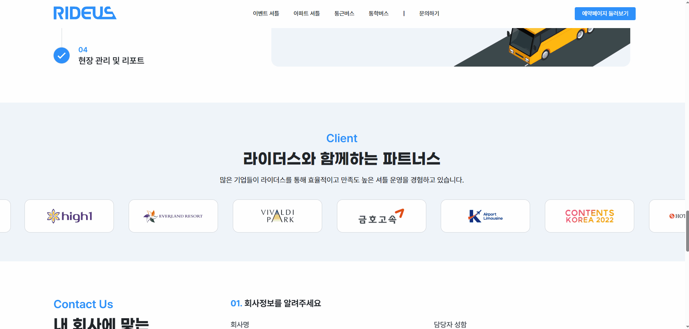
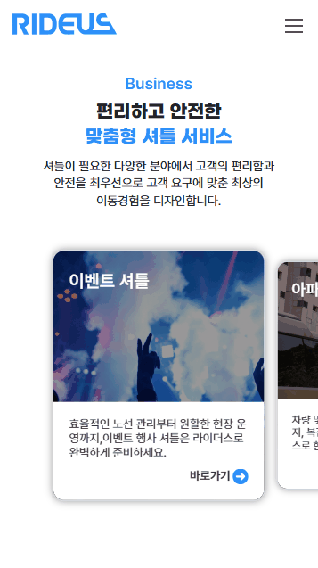
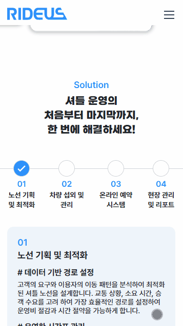

라이더스
https://www.rideus.co.kr/-
기간
2024.11 - 2024.12
-
참여도
50%
-
담당
퍼블리싱 : 고정형 UI 설계 및 마크업, 인터랙션 구현
사용스킬
HTML, CSS, JQUERY
1프로젝트 개요
사용자의 스크롤에 반응하여 동적으로 변화하는 UI를 구현하는 퍼블리싱 작업을 담당했습니다. 특히, position: sticky와 스크롤 이벤트를 활용하여 사용자 경험을 강화하고, 콘텐츠 흐름에 맞춰 시각적 피드백을 제공하는 고정형 인터페이스를 구현했습니다.
2주요 구현 내용

CSS로 인터랙션 요소의 스타일링 및 상태 변화(hover, focus 등) 적용했습니다.

position: sticky 속성을 활용하여 특정 UI(pagination 박스)가 스크롤 위치에 따라 고정되도록 처리하고, 스크롤 위치를 감지하여 해당 영역에 진입할 때 아이콘 부모 li에 .active 클래스를 동적으로 부여했습니다.

파트너사 로고를 순차적으로 등장시키는 애니메이션을 구현하였으며, Flexbox 기반의 반응형 레이아웃을 적용해 다양한 해상도에서도 균형 있게 배치되도록 구성하였습니다.


모바일/데스크톱 환경에서의 레이아웃 차이를 고려하여 등 조건부 마크업, 스타일링과 인터렉션을 구현하였습니다
3작업 중 어려움 & 해결법
문제 IntersectionObserver와 jQuery를 함께 사용할 때, 모바일 환경에서 스크롤 이벤트와 요소 활성화 타이밍이 어긋나는 문제가 발생, 또한 해상도별 슬라이드 간 간격 계산이 정확하지 않아 위치 오류와 겹침 현상이 나타났습니다.
해결 스크롤 위치 오차 범위를 조정하고 resize, scroll, touch 이벤트를 통합 관리하여 동기화를 유지하고, 슬라이드 간격은 해상도별 vw 비율로 재계산하여 반응형 환경에서도 위치 충돌 없이 동작하도록 개선했습니다.
4결과 및 성과
스크롤 위치 기반의 고정형 UI 구현을 통해 사용자가 현재 위치를 직관적으로 파악 가능
시각적 피드백 강화로 인해 사용자 만족도 및 UI 체감 완성도 향상
다양한 인터랙션 요소를 직접 구현함으로써 퍼블리셔로서 동적 UI 구성 능력 및 jQuery 활용 능력 강화
5링크